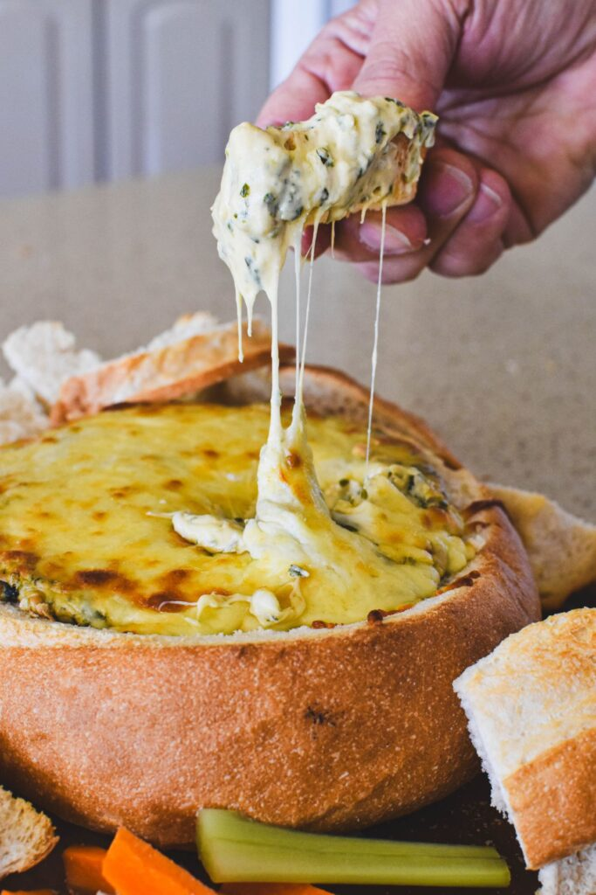

Cob Loaf

Popular, Filling, Cheesey!
Ingredients
- 1 500g cob loaf
- 1 small onion
- olive oil
- cream cheese
- thickened cream
- sour cream
- grated cheese, Cheddar
- white wine / moscato
- shortcut bacon rashers
- fresh chives
Steps
- Preheat oven to 180c
- Slice the loaf 4cm from the top and cut into pieces
- Make a circular cut in the loaf and pull out the bread
- Toast the offcuts for 10 minutes in the oven
- Add olive oil to a pan, cook the onion and bacon for 3-4 minutes
- Add white wine and cook for a further 30 seconds
- Add in the sour and thickened cream
- Add the cream cheese and 1 cup of grated cheddar
- Add the chives and stir until smooth
- Once smooth, ladle the mixture into the loaf
- sprinkle some fresh chives and shredded cheese on top
- serve immediately with toasted pieces from the oven
Feel like something else? Return to recipe index.